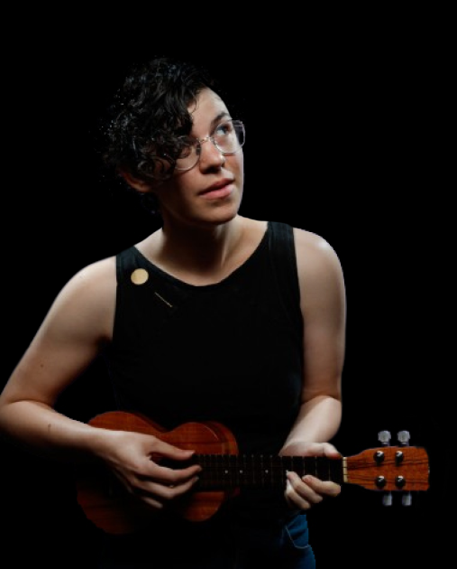

Quem
Rebecca Sugar é uma animadora, compositora, ativista dos direitos lgbtqia+ e diretora norte-americana. Entre suas principais criações está a série de televisão animada chamada Steven Universe, um desenho que estreou no Cartoon Network em novembro de 2013 e promove uma reflexão sobre temas como auto conhecimento, sexualidade, representatividade, entre outros. Steven Universe foi a primeira série produzida pelo Cartoon Network criada por uma mulher.

Rebecca Sugar também trabalhou na série “Hora de Aventura” como escritora e artista de storyboard. Em seus dois trabalhos, ela recebeu nomeação de quatro Prémios Emmy do Primetime.